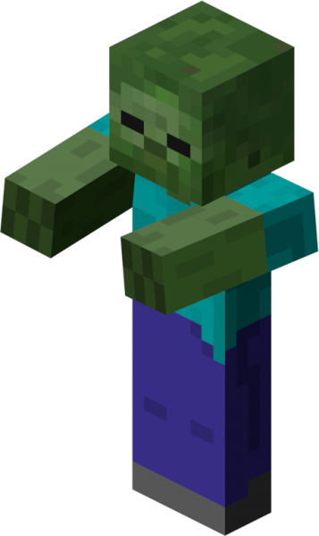
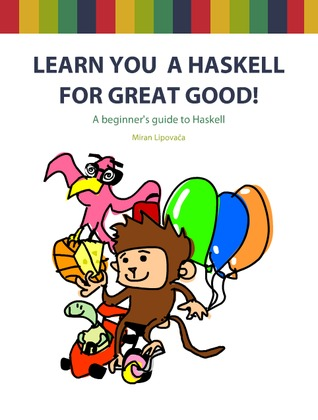

Защо трябва да обичаме Haskell?
PlovdivConf 2014
Аз съм РадоРадо
Тъй като може да не ми стигне времето, ще се представя накрая.
Тази презентация има три основни цели
- Да се замислите върху това как пишете код.
- След като се приберете у вас, да разцъкате Haskell.
- Да станете по-добри програмисти.
- (Няма да ви карам да си сменяте езика на Haskell.)
Бърза Agenda
1. Малко мотивация за Haskell.
2. Haskell crash course.
3. Ще направим едно просто приложение с IO.
Все повече езици се движат към "функционалната" парадигма.

Haskell сe води неизползваем език.

В Haskell има толкова много неща за учене, че граничи с неизползваемост, но ...
Има и много добри идеи, с които човек си заслужава да се запознае.
Писането на Haskell те кара да мислиш.
Както за решаването на проблема, така и за дизайна на кода.
Какво представлява Haskell?
module Split ( split ) where
split :: Eq a => [a] -> [a] -> [[a]]
split delimiter items = splitIter delimiter items [[]]
where
delimiterLength = length delimiter
splitIter _ [] result = result
splitIter xs (y:ys) result@(r:rs)
| xs == (take delimiterLength (y:ys)) = splitIter xs (drop delimiterLength (y:ys)) ([] : result)
| otherwise = splitIter xs ys ((y:r):rs)
Език без променливи.
a = a + 1 не съществува
Език без структури за цикъл.
Рекурсията е вашият най-добър приятел.
Pure Functional Language.
No Side Effects.
Side effect = changing something somewhere.
- Променяне на стойност на променлива.
- Писане в база от данни.
- Промяна на състоянието в някакъв UI.
Викаме два пъти една и съща функция. Получаваме различен резултат.
# Python
x = 2;
def inc_x():
global x
x = x + 1
def times_x(n):
global x
return x * n
times_x(5)
inc_x()
times_x(5)
Pure Functions.
- Без глобален state.
- Без странични ефекти.
- Винаги връщат стойност.
-- a.hs (this is a comment)
f x = x * x
Силно типизиран език.
-- b.hs
inInterval :: Int -> Int -> Int -> Bool
inInterval a b x = x >= a && x <= b
Type Inference.
Компилаторът е по-умен от нас.
-- c.hs
confIt cities = map (\city -> city ++ "Conf") cities
*Main> confIt ["Plovdiv", "Varna", "Tarnovo", "Pleven"]
["PlovdivConf","VarnaConf","TarnovoConf","PlevenConf"]
*Main> :t confIt
confIt :: [[Char]] -> [[Char]]
confIt :: [[Char]] -> [[Char]]
String = [Char]
Types.
Стандарните неща, които очаквате от един типизиран език.
- Int
- Integer
- Bool
- String
- Double
- etc.
Нека имаме функцията
-- d.hs
first [] = error "Empty list"
first (x:xs) = x
-- first [1,2,3] -> 1
-- first ["asd", "wtf"] -> "asd"
-- first [True, False] -> True
Според вас, каква е сигнатурата на first?
Polymorphic functions
-- d.hs
first :: [a] -> a
first [] = error "Empty list"
first (x:xs) = x
a може да е всякакъв тип.
Typeclasses.
Малко по-дълбоко.
-- e.hs
inList needle [] = False
inList needle (x:xs)
| needle == x = True
| otherwise = inList needle xs
*Main> :t inList
inList :: Eq a => a -> [a] -> Bool
Typeclasses ~~ Interfaces
- Типовете сами казват към кои типови класовe приднадлежат.
- Това ги задължава да имплементират определени функции.
Така изглежда Eq в Haskell
class Eq a where
(==) :: a -> a -> Bool
(/=) :: a -> a -> Bool
x == y = not (x /= y)
x /= y = not (x == y)
Дефинираме си нов тип.
data TrafficLight = Red | Yellow | Green
Добавяме TrafficLight към Eq
instance Eq TrafficLight where
Red == Red = True
Green == Green = True
Yellow == Yellow = True
_ == _ = False
Referential Transperency
Една функция, извикана два пъти с еднакви аргументи, трябва да даде един и същи резултат.
# Python
from random import randint
randint(1, 10) # 5
randint(1, 10) # 6
Как правим random в Haskell?
Как правим IO в Haskell?
Как пазим състояние в Haskell?
return 4;
-- f.hs
import System.Random
randomRange a b = getStdRandom (randomR (a,b))
randomR :: (RandomGen g, Random a) => (a, a) -> g -> (a, g)
Счупихме Haskell ;(
Сигнатурата на randomRange?
randomRange :: Random a => a -> a -> IO a
IO a

Не може да направим следното нещо:
f :: IO String -> String
Pure vs. Impure functions
IO е като зомби зараза.
Каквото се докосне до IO, става IO
Hello World!
-- g.hs
main :: IO ()
main = putStrLn "Hello World!"
Read & Print
-- h.hs
main :: IO ()
main = getLine >>= putStrLn
=<<, >>=, <-, ->, <*>, <$>, asd, wtf, etc.
Do Syntax
-- i.hs
import System.Random
randomRange :: Random a => a -> a -> IO a
randomRange a b = getStdRandom (randomR (a,b))
main :: IO ()
main = do
name <- getLine
putStrLn $ "Hello, " ++ name
randomNumber <- randomRange 1 10 :: (IO Int)
let squareRandom = randomNumber * randomNumber
putStrLn $ "Your lucky number is : " ++ (show randomNumber)
putStrLn $ "And the square is : " ++ (show squareRandom)
Do you even math?
Книжка за четене*
* не се подвеждайте от цветното.